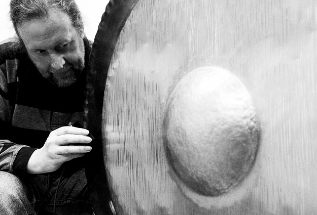
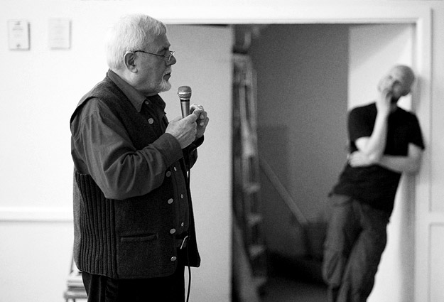

On Sunday the 28th of April 2013, we managed to convince a sizeable group of people to make their way to Callow End Village Hall for the inaugural If Wet. That was pretty encouraging; we are in the sticks after all. With the line-up we have in place for the next four events we hope this will build.
Our aim is to document each If Wet, starting from “audio only” but moving towards “video, photo and audio”. As our first event involved the inevitable extra stress associated with not really knowing what we were doing, and we were central in presenting a number of pieces of work, even the “audio only” documentation was a little tricky this time. As such we have post-produced the audio we captured for intelligibility above all other considerations. We have split this into two parts for easier listening (and to cut out the tea break) – Part1 / Part2
We thought it might also be useful to provide an overview of what went on, so you can access topics of interest and get a feel for future events. Here is how it went:
Welcome

“[If Wet is…] to give us a rolling monthly deadline in order to demonstrate work in progress, get feedback from an audience and generally have an ethos for ourselves and anyone else who is coming along to demonstrate their working methods, have a bit of a discussion around that; try and learn from one another.”
MortonUnderwood present…
[5:25 – 54:40 | Part 1]
The Placebo Gong Project
[5:25 – 37:36 | Part 1]
Using two C-tuned gongs on loan from CBSO / BCMG we demonstrated our work-in-progress. When this work is completed, musicians will be able to process the sound of their instruments through one or more gongs.

“The aim for the project overall is to get enough power into them with a musical instrument that somebody can play with the [resonant] frequencies of the gong.”
The best indication of how it should sound starts at around 10:30. The distinction here is that we were using a signal generator as the audio source. This doesn’t allow for such an intuitive response from the player, which is likely to be crucial in the development of this project.
“You very soon fall off the end of people’s knowledge about even how the instruments they make work.”
[Talking about how much of our work is at or beyond the edge of conventional thinking / knowledge]
“There’s something very strange going on. This is going to happen a lot at If Wet. That’s partly the point.”
[Talking about the technical difficulties we experienced]
Note: As you will hear from the audio, we experienced a few difficulties when demonstrating this project on the night. We have recordings here (driven with a signal generator) and here (driven with a fretless guitar) that better demonstrate the potential.
The Giant Feedback Organ
[37:36 – 54:40 | Part 1]
Using an extendible length grain blowing pipe (on loan from our local farm) we have been creating a series of low notes, using only the length of the pipe, a microphone, a speaker and an EQ.

“Up the middle of the auditorium, if that’s what this is, you will see a huge pipe. Gill, who is stood over there is the wife of our local farmer, who very kindly lent us these pipes, which normally have grain blown up them, and what we are doing with them is trying to create a feedback organ. […] What we are using is the pipe to determine what note is created, what frequency that feedback fires off at.”
“It’s rather like a bad clarinettist or a bad saxophone player; if you don’t blow it hard enough it will squeak. […] it needs less energy to start it at a higher harmonic than it does on the fundamental. […] You put it [the mic] in, it squeaks, you put the notch in where it squeaks, it’ll squeak at the next one down, you gradually drive it down so that it goes off at the fundamental.”
[Talking about our use of an EQ to drive the frequency down]
“We did briefly make this with two different diameters of pipe, one slid inside the other. So we made the biggest swannee whistle in the world.”
[Talking about our prior testing]
The Isle of Everywhere
[00:18 – 30:56 | Part 2]
Two-thirds of The Isle of Everywhere kindly filled our main guest slot with an explanation and demonstrating of the complexities of melding traditions and tunings in their dub band, which features tuba, drums and santoor. There was a technical explanation and demonstration of both instruments and the scales they use together, followed by a performance piece to illustrate the results. Stuart also provided a demonstration of some extended tuba techniques after their performance.

“The tuning system we have got for this piece is a westernised version of the modal scheme for the dastgah of Bayat-e-Esfahan”
[Simon talking about his santur tuning for this piece]

“If you bring this fourth valve into play, you can actually play G half-flat.”
[Stuart talking about the “hacks” he applies to get the tuba to play within the context of the santur scale]
Paul John
[33:15 – 51:56 | Part 2]
Paul will provide regular input at If Wet. He has a history in teaching musical instrument technology. At this If Wet he provided an insight into the development of early stringed keyboard instruments, with particular emphasis on the clavichord.

“It is possibly one of the quietest instruments that has ever evolved.”
[Talking about a clavichord and how it is often best experienced in the round]
Run What Ya Brung
[52:20 – 1:02:18 | Part 2]
We run a regular feature at If Wet in which members of the audience are invited to bring along and demonstrate instruments, sound objects and sonic oddities. We were very lucky to have such great contributions to this slot at the first If Wet.
Tim Cranmore
[52:25 – 58:04 | Part 2]
Tim is a local recorder maker and maker/player in the UK Vegetable Orchestra. He wowed us with a collection of three instruments including: one of his fipple-flutes, a Paetzold contrabass recorder and a recorder made from a carrot – on which he played some Mozart!

“I just want to introduce you to a third fipple-flute. […] It’s in my pocket, you need to keep it damp.”
[Talking about his carrot recorder]
Richard Windley
[58:48 – 1:02:18 | Part 2]
Richard is a Hereford-based artist/maker who is currently working in the field of technical reproductions, created for television and film. His work and experience spans many years. He brought along a kinetic sculpture of his to show us.

“What I was hoping to do was take some of the energy out of it and turn the sinewave of the tuning fork into something that was a bit more raucous.”
[Talking about his kinetic sculpture, the “Interstellar Communication Detector”]
The evening ended with a lot of people sticking around to chat. One of the core aims of If Wet it to build links locally. We are confident there are people who share our interests out there and we’d like to hook up with them to form some sort of creative community. If Wet #1 was a VERY positive start in that direction!
________________________________________
The full set of Pete’s photographs of If Wet #1 are available here.
Everyone who presented! Everyone who engaged and provided feedback. Everyone who came. Simon Webb and the CBSO, BCMG and Richard Hawley (THSH) for their support with the gongs. Our local farmers Richard and Andrew for the loan of the grain blowing pipes. Kavita and Gill for running the bar. All other helpers on the night (who put out chairs etc.). Pete Ashton for taking photographs.